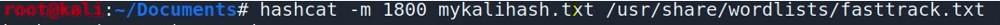
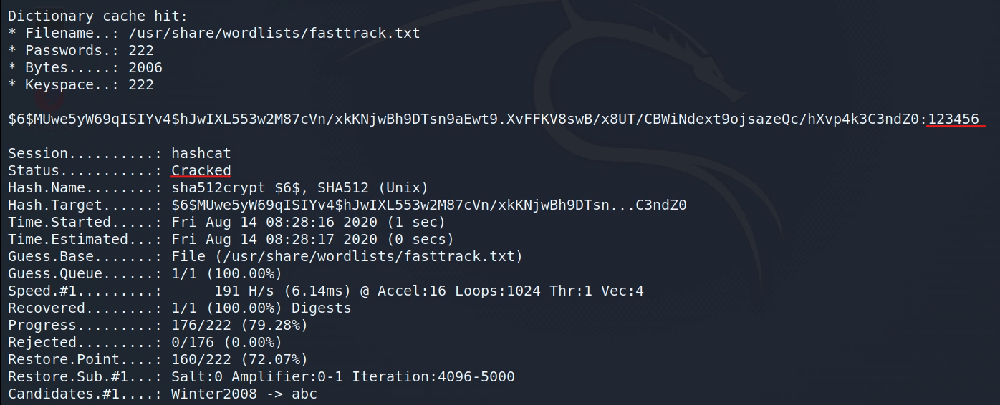
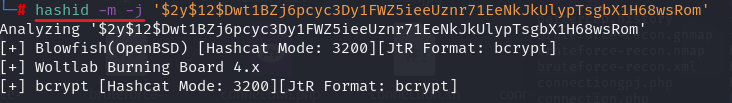

hashcat
Hashcat
hashcat açık kaynaklı, içinde yüzlerce farklı hash algoritmasını kırmaya yarayan çok güçlü ve kullanışlı bir programdır.
Linux'de hashcat indirip kurduktan sonra, hash içeren text dosyamız üzerinde hashcat çalıştırmak için

hashcat -m <hash_algorithm> <hashTextFile> <dictionaryFile>
bu şekilde bir komut vererek çalıştırabiliriz. “-m” kısmında <hash_algoritması> için numara vermemiz gerekir. Hangi algoritmayla hashlenmişse ona göre veriyoruz. hashcat --help komutu ile dökümanı inceleyip algoritma numarasına bakarız.

komutu çalıştırdıktan sonra bu şekilde bir sonuç “cracked” olarak görünürse şifre kırılmış (bu örnekte 123456) demektir.
Bir hash'in hangi algoritmayla kullanıldığını bulmak:

hashid -m -j <hash>